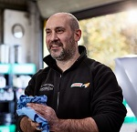

INFORMACIÓN COVID
| DISTANCIA >2M DE SEGURIDAD | DESINFECCIÓN DE PUNTOS BÁSICOS DEL VEHÍCULO | NUESTROS TÉCNICOS PROTEGIDOS | MAMPARAS DE PROTECCIÓN EN ATENCIÓN AL CLIENTE |
Cuidamos de tu vehículo y de tí. Consulta nuestro protocolo de seguridad COVID-19
INFORMACIÓN COVID
| DISTANCIA >2M DE SEGURIDAD | DESINFECCIÓN DE PUNTOS BÁSICOS DEL VEHÍCULO | NUESTROS TÉCNICOS PROTEGIDOS | MAMPARAS DE PROTECCIÓN EN ATENCIÓN AL CLIENTE |
Cuidamos de tu vehículo y de tí. Consulta nuestro protocolo de seguridad COVID-19
En Record Autoak dedicamos todos nuestros recursos a un solo propósito: reparar y solucionar averías de vehículos de cualquier marca, modelo o antigüedad.
En Bizkaia damos servicio a más de 25.000 conductores cada año. Te presentamos al equipo que lo hace posible:
 Pilar Tellez
Directora General
|
 Christofer Arranz
Encargado de Administración
|
 Carmen & Oscar
Mecánicos
|

Antonio Gonzalez
Encargado de Residuos
|
Garantiza de por vida todos sus trabajos de sustitución. Esta garantía no será aplicable cuando los daños sean ajenos al servicio de sustitución y hayan sido provocados por causas no imputables a RKA.
RKA garantiza de por vida la corrección técnica de los trabajos de reparación, y la satisfacción óptica durante un plazo de tres meses a contar desde el momento de la reparación.
política de Calidad
La Política de Calidad de RecordAutoak S.L. está disponible para toda aquella parte
interesada que así lo requiera. Dicha petición deberá ser solicitada a través del correo
lectrónico:Rekord_Autoak@gmail.com
En Record Autoak sólo utilizamos los mejores materiales, homologados y fabricados en conformidad con las normas establecidas por el Fabricante del Equipo Original (OEM) y comprado directamente a los fabricantes que también suministran a la industria automovilística, de modo que se garantiza así, que todos los materiales que instalemos sean de la misma calidad que la del original.
Para garantizar una excelente calidad en nuestros servicios, nuestros técnicos
cuentan con amplia experiencia precedida de un proceso de formación riguroso y
continuado. De hecho, somos la única empresa del sector que cuenta con
la Certificación de Formación No Reglada ISO 29990:2010.
Record Autoak también se enorgullece de contar con la Certificación de
calidad ISO 9001:2015